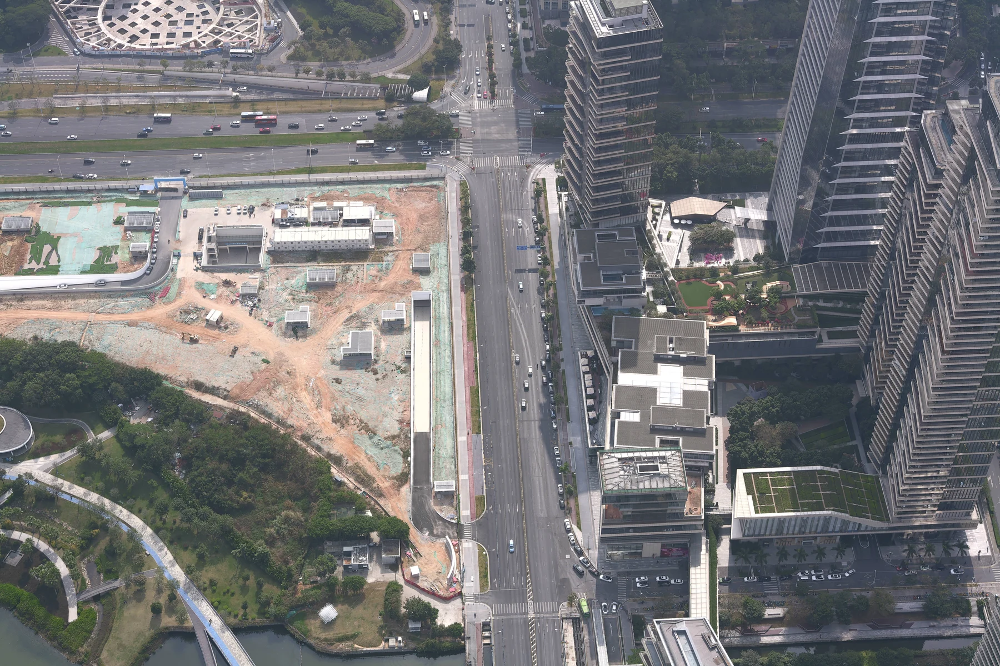
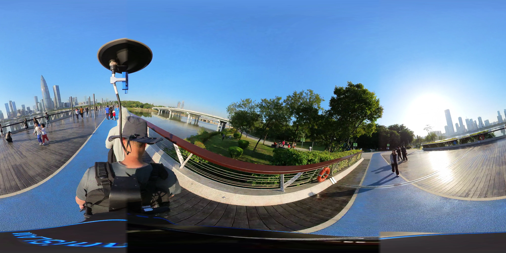
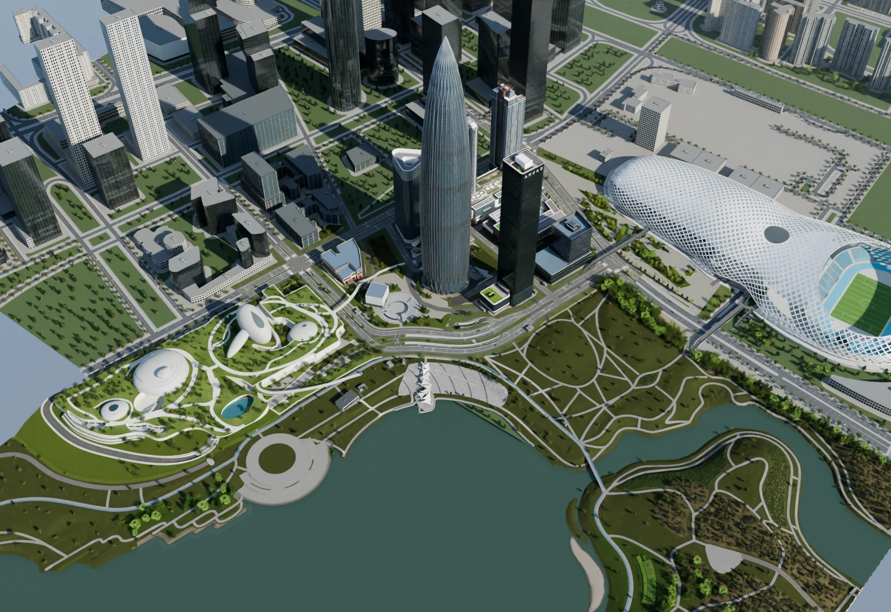

01
Multi-platform observations
Aerial imagery, LiDAR, and ground panoramas provide complementary urban evidence.
EMBODIED AI / URBAN INTELLIGENCE
From direct perception to integrated autonomous exploration.
Research project · Benchmark under development
A 65-second native-rendered tour of the Chunsun Tower district, from the waterfront to architectural details. This video shows the environment, not an agent episode.
Recognizing a scene is only the beginning. Urban agents must gather evidence, relate places, remember earlier observations, and revise their plans as an activity unfolds.
CityAgentBench organizes these demands into six capability levels and 24 coverage categories. Its environment brings together real aerial, vehicle-mounted, and backpack observations with editable reconstructions of Shenzhen Bay. The evaluation design connects visual observations to actions and environment-verified outcomes, while keeping scene evidence, task specifications, and scoring separate.
ENVIRONMENT & EVALUATION


Aerial imagery, LiDAR, and ground panoramas provide complementary urban evidence.

Buildings, paths, and public spaces are organized into a structured city scene.
Actions produce new observations; task outcomes require independent evidence.
Project organization. Captured imagery, reconstructed scenes, and pilot execution recordings retain separate provenance.
EXPLORE THE ENVIRONMENT
Find places on the vector map, try navigation, or zoom into the reconstructed city.
THE SIX-LEVEL FRAMEWORK
From what is visible now to what must be coordinated over an entire journey.
Figure 1a. The six-level capability taxonomy. Each row relates a reasoning demand to four coverage categories. The schematics describe task requirements, not measured model performance.
Figure 1b. Conceptual overview of the six capability levels, illustrated using project-render references. Numbered locations, paths, and checks are schematic; they do not show verified task routes or outcomes.
PRIORITY DEVELOPMENT
The initial image contains sufficient evidence. The agent identifies entities, reads signs, counts visible targets, and judges local spatial relations.
L1–L3 are the current implementation priority; L4–L6 remain in the research design. The 24 categories guide coverage rather than fixed task quotas. Instances require validation before evaluation.
MULTIMODAL FOUNDATIONS
Real acquisition records reveal where the platforms overlap—and where they do not.
Figure 2. Coverage and acquisition composition, computed from the 2026-09-08 project indices. Ground coverage uses sampled occupancy; aerial footprints do not imply pixel-level alignment.
Source & methodology ↗AERIAL IMAGERY
Nadir and oblique images capture the relationships between buildings, roads, waterways, and ground surfaces.
INTERACTIVE OBSERVATION
A ground-level reference from Starlight Bridge.
Frame 1130d / 998. The landmark correspondence is known; the per-frame absolute camera pose remains unverified. This is captured reference imagery, not a simulated evaluation observation.
THE URBAN ENVIRONMENT
Waterfront paths & public facilities
Landmarks, streets & urban connections
Venues, plazas & approach roads
Native Blender renders from the September 2026 project report. Reconstructed views are shown separately from the raw capture data.
EVALUATION DESIGN
L1 uses a single initial image. Moving tasks acquire subsequent observations through actions and retain access to public maps and navigation.
Localization, counting, text reading, and semantic answers use separate scoring rules. English interaction preserves the original language of visible signs.
Images, ground truth, and scoring must be validated before use. Navigation also requires calibrated routes, action budgets, and environment checks.
The six-level benchmark is under development. The videos document existing environment and pilot work; a validated full benchmark, formal results, and public paper/code links are not yet available.